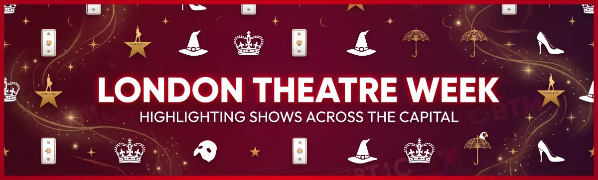

<p>If your household loves the buzz of live theatre as much as ours does, consider this the ultimate treat: <span class="tag tag-touring">Special Promotion</span> <strong>London Theatre Week has arrived, and it truly feels like Christmas come early!</strong></p>
<p>The West End’s biggest ticket promotion of the season is officially live, opening up access to more than 80 world-class shows with exclusive, set promotional pricing from just <strong>£15, £25, and £35</strong>. Whether you’re looking to introduce your little ones to their very first big musical, secure brilliant seats for an autumn weekend getaway, or lock in half-term and festive treats well before the rush, this is the single best time of the year to grab incredible bargains.</p>
<h2>Our Personal Family Favourites Included</h2>
<p>What makes this year’s London Theatre Week lineup especially magical is that some of our absolute all-time family favourites are included in the exclusive pricing tiers:</p>
<ul>
<li><strong>The Lion King (Lyceum Theatre):</strong> Pure theatrical magic from the very first opening call of the Circle of Life. Julie Taymor’s breathtaking puppetry and visual grandeur make it an unforgettable sensory spectacle for kids of all ages.</li>
<li><strong>Oliver! (Gielgud Theatre):</strong> Lionel Bart’s classic masterpiece is back in London, packed with timeless tunes, irresistible energy, and rich storytelling that captivates every generation.</li>
<li><strong>Wicked (Apollo Victoria Theatre):</strong> The gravity-defying emerald phenomenon remains one of the most spellbinding, empowering, and visually thrilling experiences on the London stage.</li>
</ul>
<h2>Unbeatable Value Across 80+ West End Shows</h2>
<p>Beyond our top picks, the promotional roster covers dozens of acclaimed musicals, blockbuster family plays, and immersive experiences—including <em>Matilda The Musical</em>, <em>Les Misérables</em>, <em>The Phantom of the Opera</em>, <em>Back to the Future: The Musical</em>, <em>Mamma Mia!</em>, and <em>The Play That Goes Wrong</em>.</p>
<p>Taking children to West End shows can sometimes feel like a daunting investment, particularly when navigating travel and sensory requirements. Campaigns like London Theatre Week take the pressure off by unlocking premium tiers and circle seats at a fraction of standard peak pricing. Ticket allocations at these fixed price bands are limited and sell fast, so be sure to check dates and book early!</p>
<h3><i class="fa-solid fa-ticket"></i> London Theatre Week Campaign Breakdown</h3>
<ul>
<li><strong>Promotion Name:</strong> London Theatre Week</li>
<li><strong>Ticket Price Tiers:</strong> Exclusive fixed-price bands from <strong>£15, £25, and £35</strong> across participating performances.</li>
<li><strong>Featured Highlights:</strong> Over 80+ productions including <em>The Lion King</em>, <em>Oliver!</em>, <em>Wicked</em>, <em>Matilda</em>, <em>Les Misérables</em>, and <em>Back to the Future</em>.</li>
<li><strong>Booking Window:</strong> Limited-time seasonal campaign (availability on a first-come, first-served basis).</li>
<li><strong>Official Booking Link:</strong> <a href="https://www.todaytix.com/london/category/london-theatre-week" target="_blank" rel="noopener noreferrer">Explore all London Theatre Week deals on TodayTix →</a></li>
<li><strong>BTMC Parent Tip:</strong> When booking, check the venue's access page or visual story in advance to pick aisle seats or lower-tier circle rows that give younger or neurodivergent children clear views and easy exit paths.</li>
</ul>